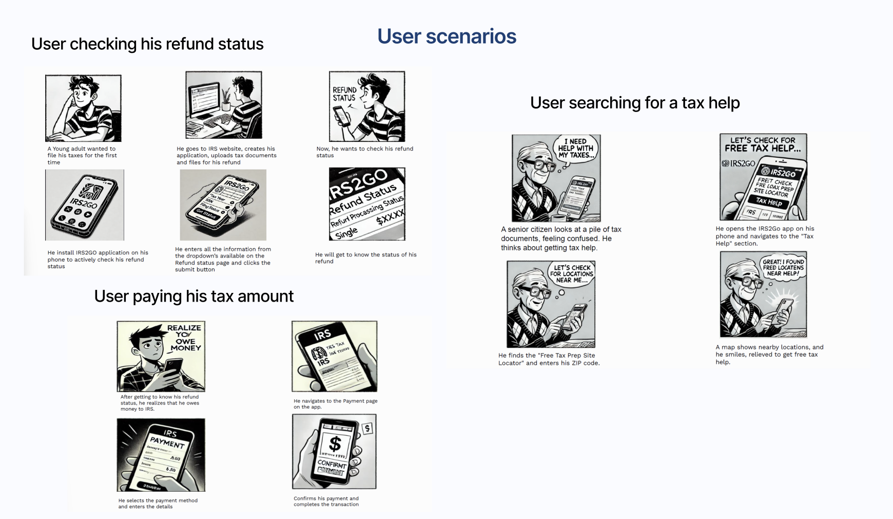
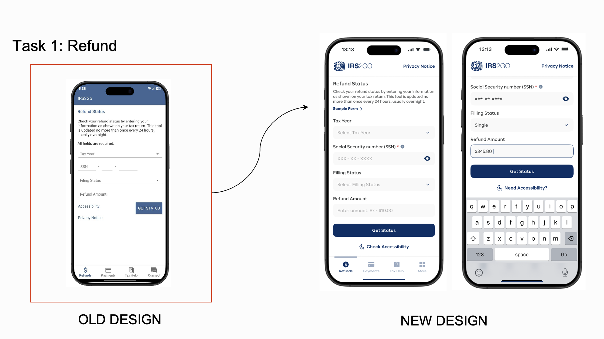
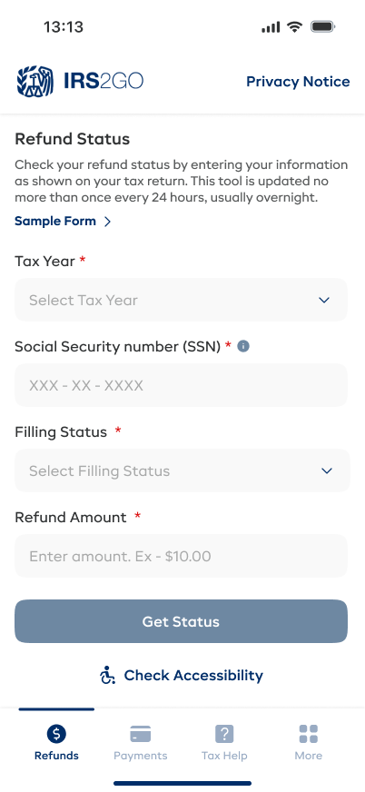
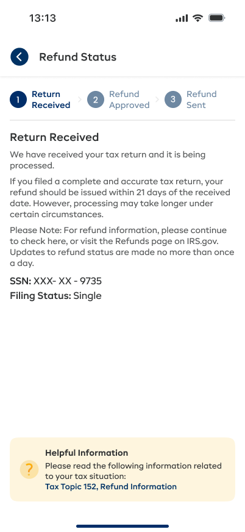
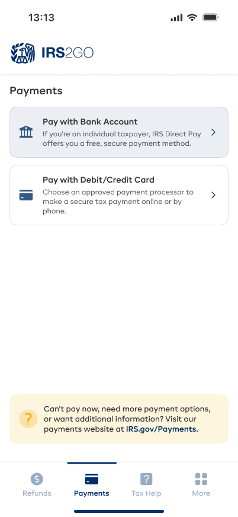
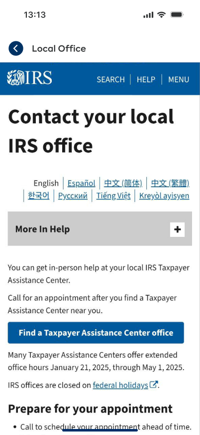
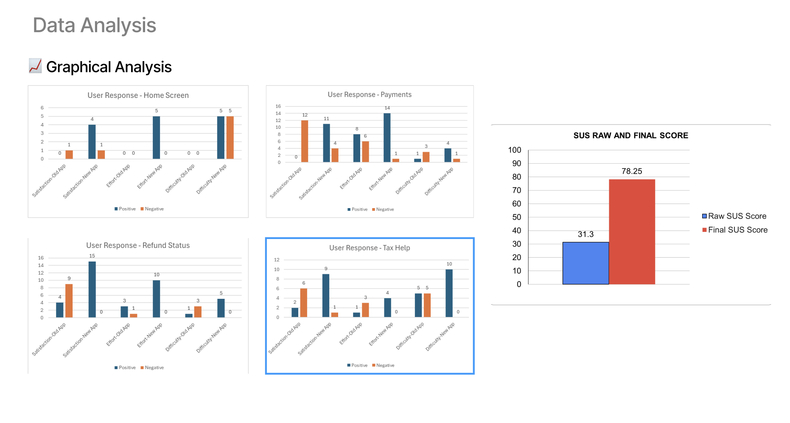

The IRS's official mobile app, rated 2.8 stars, where 45% of people abandoned a task before finishing it. Over four months I rebuilt the three things people actually open it for, checking a refund, making a payment and finding free tax help, as an accessibility-first redesign. The System Usability Scale score more than doubled, from 31.3 to 78.25, at full WCAG 2.1 AA.
IRS2GO is the official mobile app of the Internal Revenue Service, used by millions of American taxpayers to check refund status, make secure payments, and find free tax assistance. Despite being essential, the app received a 2.8★ average App Store rating and a 45% user drop-off rate, meaning nearly half of users who opened it left before completing any task.
The core problems were structural: visual clutter buried simple answers, inconsistent design patterns eroded trust, and accessibility failures shut out a significant portion of users who needed the app most. Our challenge was a complete UX/UI overhaul under the constraint of maintaining the app's government brand and legal requirements.
A 2.8-star app with 45% task abandonment could have justified a full rebuild. Instead I scoped the study to exactly three tasks: check a refund, make a payment, find free tax help. Those three carried the abandonment and are what people actually open the app to do.Everything that follows is measured against those three tasks, not against the app as a whole.

Research combined diary studies, App Store review analysis, surveys, and structured user interviews. We focused on exactly 3 core tasks to keep the study focused, check refund status, make a payment, and find free tax assistance, and mapped the specific friction points causing abandonment in each.
Users were confused by vague status messages like "Return Received" with no estimated date. The input fields required specific formatting with no guidance, causing repeat submission errors. 68% of users who attempted this task left without getting a clear answer.
The payment flow consistently redirected users to the IRS website mid-process. No confirmation summary before submission created genuine anxiety about accidentally double-paying taxes, one of users' most significant fears.
The VITA/TCE location finder returned zero results for valid zip codes, showed outdated hours, and provided no way to filter by language availability. Users who needed this feature most, those with limited English, were the ones most likely to find it broken.
The heuristic evaluation failed on hierarchy, consistency and error prevention, not on aesthetics. So I treated this as a structural problem rather than a visual refresh, and put the effort into information architecture and labelling instead of restyling the existing screens.That choice is why the redesign changes what fields say and where tasks live, not just how they look.
Our primary persona emerged from combining diary study data, interview analysis, and App Store review sentiment. He represents the majority of IRS2GO users: a working adult who files their own taxes, is not a financial expert, and is using the app specifically because they are waiting on money they urgently need.
Alex filed his taxes three weeks ago expecting a $2,100 refund, he's counting on it to cover a vet bill. He opens IRS2GO for the first time, having heard it lets you track refund status. He's not a financial expert and has never used a government app before. He just wants a simple answer: "Where is my money?"
Alex downloads IRS2GO. The home screen shows seven different menu options in equal visual weight, Tax Records, Free Tax Return Prep, VITA Locator, Newsroom, and more. He can't immediately find "Where is my refund?"
😕 Confused, expected one clear optionHe finds "Refund Status" buried in a secondary menu. He enters his SSN and filing status, but the field format is wrong, it rejects his input with a generic "Invalid entry" error and no guidance on the correct format.
😤 Frustrated, the error tells him nothingAfter two more attempts he gets through. The result: "Return Received." No estimated date, no explanation of what comes next, no indication of how long "Received" typically takes to become "Refund Sent."
😶 Unsatisfied, he's no better informed than beforeHe taps a help link to understand what "Return Received" means. The app opens Safari and redirects him to irs.gov, which times out. He closes the app and Googles "IRS refund status" instead, finding the answer in 10 seconds on a third-party site.
😠 Angry, the official app is less useful than GoogleAlex checks a refund at his most anxious moment: hurried, one-handed, on a phone. So I designed for the worst-case context rather than the ideal one: larger touch targets, one primary action per screen, and no step that assumes a calm user with time to read.This ruled out the dense, multi-column layouts the old app relied on.
Tax season carries a specific emotional charge, the stakes are real, the amounts are significant, and the consequences of errors feel severe. Alex isn't just annoyed by bad UX; he's genuinely anxious about money he's owed and payments he's making.
The emotional weight came from not knowing where the money was, not from missing features. So plain-language status replaced IRS terminology, and the refund state is written as a sentence a person can act on rather than a processing code they have to interpret.Reassurance became a design requirement, not a copy detail.
Mapping Alex's journey through the single most common task, checking his refund status, reveals three distinct failure points where the original app destroys user confidence. Each failure compounds the next.
Searches "IRS refund status app", finds IRS2GO with 2.8★ rating, downloads anyway
Expects a single clear entry point to refund status on launch
Confronted with 7 equal-weight menu items, scans for "refund" or "status"
Can't find it immediately, scans twice before locating buried option
Inputs SSN, filing status, refund amount
Gets "Invalid entry" with no format hint, retries twice
Formats SSN differently on third attempt, finally accepted
Result: "Return Received", no date, no explanation, no next step
Taps a "What does this mean?" link
Safari opens, irs.gov loads slowly, times out
Closes IRS2GO, gives it 1 star in App Store
Finds answer on third-party site in 10 seconds via Google
Never opens IRS2GO again
The journey map showed the breaks happening at hand-offs, where the app pushed people out to the IRS website mid-task. So all three tasks had to complete inside the app. The target became zero redirects, which is what the next section is named for.The tax-help locator moved from an external link to a primary tab because of this.
We visualised user journeys through comic-strip scenario narratives, this helped us empathise with the specific emotional context of tax anxiety, and particularly the fear of making irreversible payment errors. Brainstorming focused on two imperatives: keep users inside the app, and confirm every critical action before it becomes irreversible.
Reduce the home screen from 7 equal-weight items to 3 clearly labelled pillars: "Where's My Refund?", "Make a Payment", "Find Tax Help". The most common task is always one tap away, no scanning required.
Replace the vague "Return Received" status message with a timeline: Received → Processing → Approved → Sent, with an estimated date range for each stage. Users always know what comes next.
Before any tax payment processes, show a full summary modal: amount, account, date, and a plain-English explanation of what will happen. Users must confirm before submission, eliminating the double-payment anxiety entirely.
The most common task (refund status check) should require zero account creation. "Continue as Guest" is promoted to the primary CTA, Login moved to secondary. Reduces friction from first launch to first value.


Scenarios were storyboarded for all three user types before any screen was drawn, so that concepts were selected on whether they removed a documented friction point, not on whether they looked new. Ideas that did not map to an observed failure were cut here.The surviving concepts became the three flows in the next section.
Moving from wireframes to final UI, we applied a new visual identity that feels trustworthy and official while remaining warm and approachable. The design language uses strong typography for hierarchy, confident colour application for status states, and a layout system that always puts the user's most needed information at the top of the screen. Every task completes end-to-end inside the app.




Every field is labelled, every required field marked, and help text sits above the input rather than after the error. That came directly from the error-prevention heuristic failure. The old form let people submit wrong data and only then explained the rules.The persistent four-tab bar exists for the same reason: the old navigation buried two of the three core tasks.
Usability testing used the Think-Aloud Protocol alongside the System Usability Scale (SUS). The redesign jumped from a "Poor" SUS score of 31.3 to an "Excellent" score of 78.25, a 150% improvement. Post-testing, participants consistently described the redesigned app as feeling "more official," "trustworthy," and "like it was actually designed for real people."
Users attempting to check refund status were immediately prompted to create an account or log in. Many dropped off at this screen, they just wanted a quick answer, not a commitment.
"Explore without signing in" promoted to primary action on the launch screen. Login moved to secondary. Post-iteration: zero drop-offs at the login prompt for the refund status task.
During testing, 3/6 participants hesitated or abandoned the payment flow because they couldn't confirm the amount before it processed. One participant said: "I'm scared to tap Submit, what if it goes through twice?"
Summary modal added: amount, account, date, and type of payment, all confirmed before the final "Confirm Payment" button. Post-iteration: 0/6 participants expressed payment anxiety during testing.

Testing changed two things I had wrong. Users would not sign in just to check a refund, so guest access became the primary call to action; and payment with no confirmation step caused visible anxiety, so a full summary modal was added before submit.Both changes came from watching the sessions, not from the SUS number alone.
The IRS2GO redesign taught us that government UX carries a unique burden: when users don't trust the interface, they don't trust the institution behind it. A confusing payment screen isn't just bad UX, it actively undermines public trust in the IRS. Design is governance, in the hands of real people.
Explore the fully clickable high-fidelity Figma prototype covering all three redesigned flows, Refund Status, Payment, and Tax Help.